第一次用 Onset，從這裡開始
給第一次用 Onset 的創作者。不用懂程式，照著做就好。
Onset 是一個從「寫腳本」到「拍」「剪」「做封面和貼文」都在同一個地方完成的 app。 它有一個 AI 助手叫 AI Onset，你用說的或打字叫它做事，它做的每一步你都看得到，也能隨時暫停。
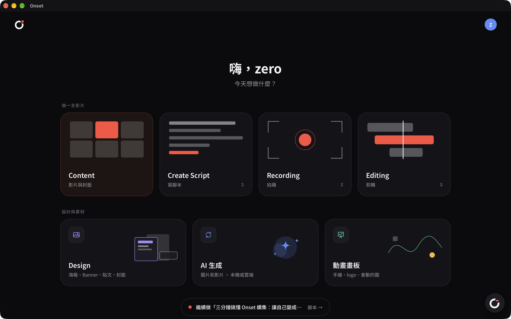
- 寫腳本
- →
- 拍攝
- →
- 剪輯
- →
- 封面和貼文
- →
- 輸出
先知道三件事
- 每個畫面右下角的圓形按鈕就是 AI Onset。 不知道怎麼做的時候，直接問它。鍵盤按 ⌘J 也能叫它。
- AI 改過的東西都能復原。 每次 AI 做完，都有一顆「↶ 復原這次 AI 的改動」。
- 要花錢的事一定先問你。 雲端生成會先報價，你按同意才做。
關於這本手冊的截圖
截圖是在測試環境拍的（測試帳號「小明」、用 Mac 語音念的假影片、不連真的 AI）。 所以有些畫面的文字會跟你看到的不一樣，例如儲存位置顯示的是測試資料夾、AI 的回答比較短。按鈕和位置都是一樣的。
安裝和第一次打開
1-1 把 Onset 裝到 Mac
- 打開 Onset 的
.dmg檔。 - 把 Onset 拖進「應用程式」資料夾。
- 到「應用程式」，按右鍵點 Onset → 打開（不要直接點兩下）。
看到「無法驗證開發者」怎麼辦？
第一次打開時，macOS 可能說「無法打開 Onset，因為無法驗證開發者」。這是因為 Onset 還沒有經過 Apple 公證，不是壞掉。
- 方法一： 在 Onset 上按右鍵 → 「打開」→ 再按一次「打開」。
- 方法二： 打開「系統設定」→「隱私權與安全性」→ 往下捲，看到 Onset 那一行 → 按「仍要打開」→ 輸入 Mac 的密碼。
只要做一次，之後就可以正常點兩下打開。
1-2 使用條款與隱私聲明
第一次打開，會先看到「使用條款與隱私聲明」（照 Mac 的語言顯示中文或英文）。
- 往下讀一遍：你的影片和腳本都留在你自己的裝置上；只有你用 AI 或雲端服務時，才會把那件工作需要的內容送給那個服務。
- 勾「我已閱讀並同意」。
- 按「同意並繼續」。
按「不同意」就不能用 Onset。之後想再看一次：右上角頭像 →「設定」→「關於」→「使用條款與隱私聲明」。條款更新時，Onset 會請你再同意一次。
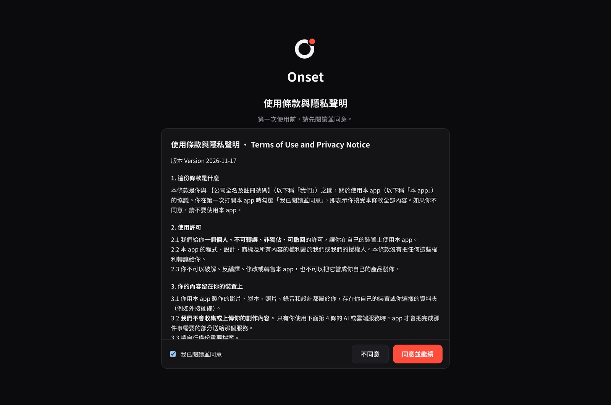
1-3 選語言、建立帳號（Profile）
同意條款後會看到這個畫面。
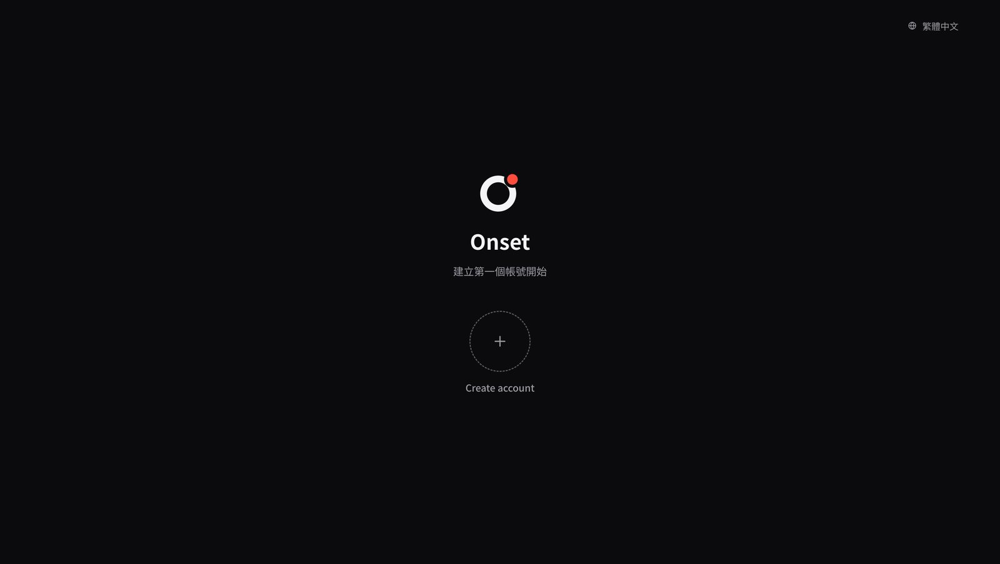
- 右上角可以選介面語言：繁體中文、简体中文、English、Bahasa Melayu、日本語、한국어。
- 按中間的 ＋「Create account」。
- 填三樣東西：Email、Username（顯示的名字）、密碼（至少 6 個字）。
- 想要點頭像就進去、不用每次打密碼，可以勾「進入時不需要輸入密碼」。之後在設定也能改。
- 按「繼續」。
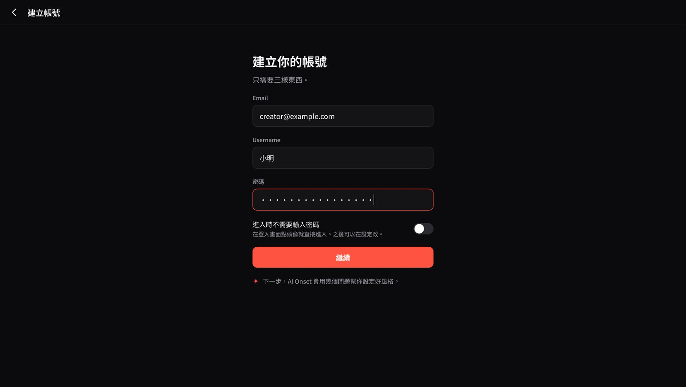
1-4 安裝助手：選 AI、裝好工具
在新的 Mac 上第一次登入，會先出現「安裝助手」。它會檢查這台 Mac 有什麼，缺的東西按一下就裝，都裝在你自己的資料夾，不用管理員密碼。只有你按了按鈕才會安裝，不會在背景偷偷下載。
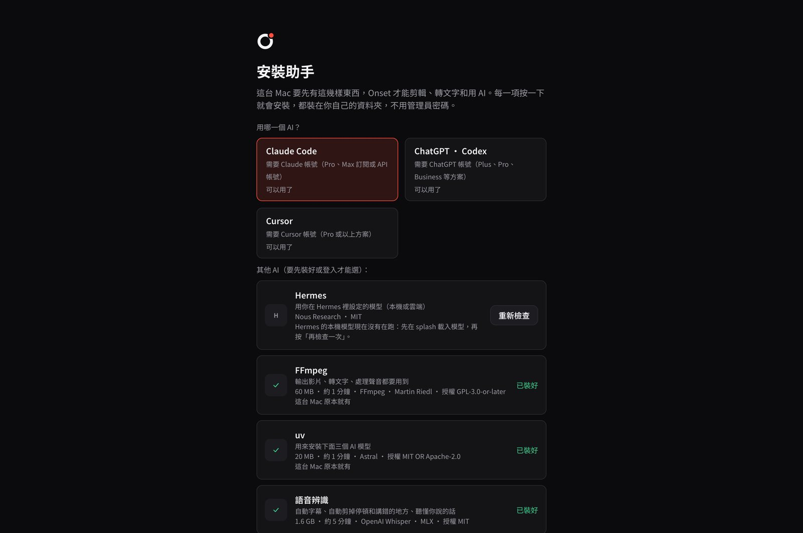
第一步：用哪一個 AI？ AI Onset 的「大腦」可以選這幾個：
| AI | 需要什麼 |
|---|---|
| Claude Code | Claude 帳號（Pro、Max 訂閱或 API 帳號） |
| ChatGPT · Codex | ChatGPT 帳號（Plus、Pro、Business 等方案）。回答會整段出現，不會一個字一個字打出來 |
| Cursor | Cursor 帳號（Pro 或以上方案）。要查網路或看圖片時，會交給 Claude Code 代答（有裝好並登入的話），畫面會說 |
| Hermes | 不用另外的帳號：用你在 Hermes 裡設定的模型（本機或雲端）。本機模型免費但很慢，中文大約每秒 12 個字 |
已經裝好並登入的 AI 會寫「可以用了」，點一下就選它。還沒裝的列在「其他 AI」下面：按「安裝」，再按「登入」，終端機會打開並帶你到瀏覽器登入，登入好這裡會自己更新。
第二步：工具和模型。 往下有 FFmpeg（輸出影片、轉文字要用）、uv（用來裝下面的模型）、語音辨識、AI 配音、人聲分離，每一項都寫了大小、大約幾分鐘和授權。「本機生成（選用）」有自己的安裝頁。
都好了，按「都好了，開始」。
1-5 頻道風格問答（約 1 分鐘）
接著 AI Onset 會問你 7 個問題，幫你設定頻道的風格。每題點一個最接近的就好，也可以在下面的輸入框用自己的話回答。
| 步驟 | 問什麼 | 例子 |
|---|---|---|
| 1 風格 | 整個頻道給人的感覺 | 溫暖手作、俐落專業、活潑有趣、安靜質感 |
| 2 拍攝內容 | 你主要拍什麼 | Vlog、教學、產品介紹、訪談 |
| 3 參考畫面／連結 | 有沒有喜歡的影片或帳號 | 放截圖、貼連結，或「沒有參考」 |
| 4 剪輯風格 | 剪起來的節奏 | 快節奏、乾淨簡約、電影感、紀錄片 |
| 5 調色風格 | 畫面顏色 | 自然、暖色、冷色、底片感 |
| 6 Mascot | 有沒有吉祥物 | 放圖片，或「沒有」「之後再說」 |
| 7 Logo | 有沒有 Logo | 放圖片，或「沒有」「之後再說」 |
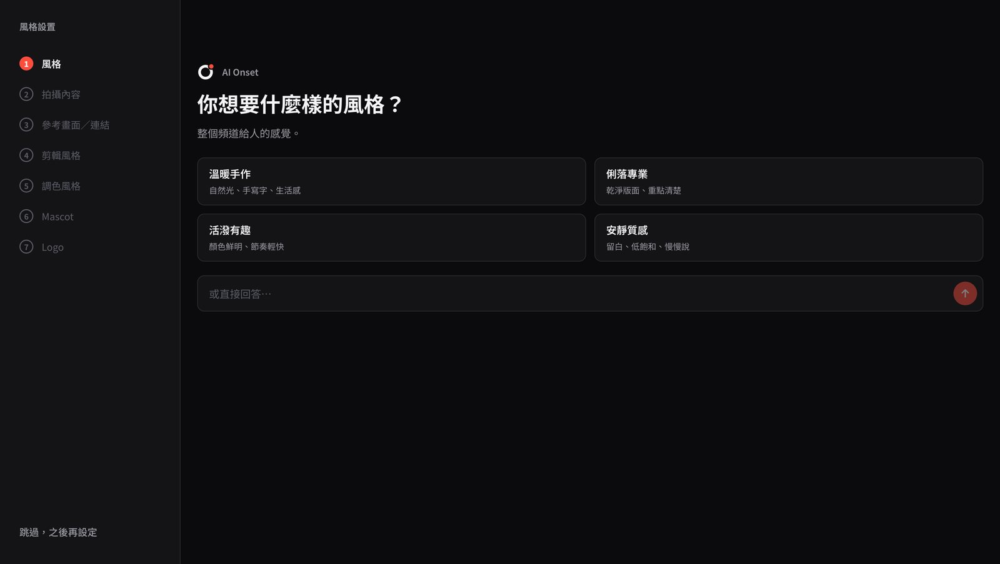
不想現在回答？按左下角「跳過，之後再設定」。
答完之後，AI Onset 會做出四個風格：腳本風格、採訪風格、設計風格、剪輯風格。之後寫腳本、剪輯、做封面時都會照著做。想改，到右上角頭像 →「設定」→「風格」。
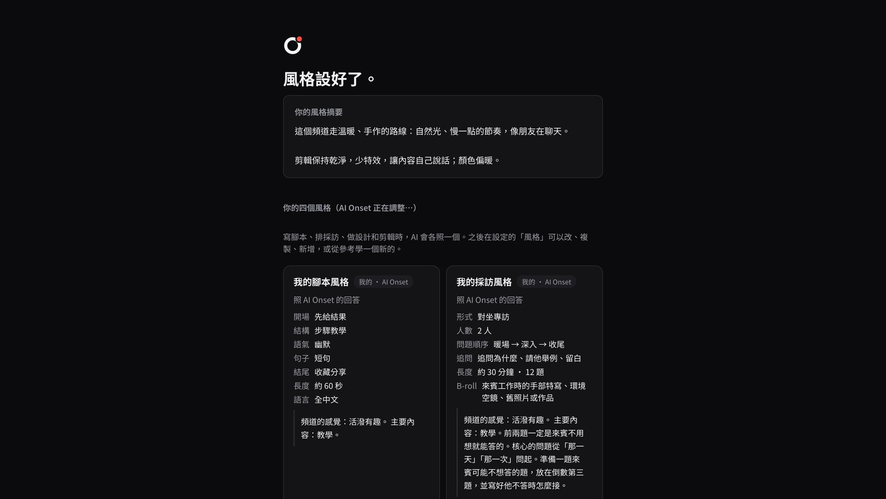
1-6 要不要下載 AI 模型？
最後一步，Onset 會問要不要下載在這台 Mac 上跑的 AI 模型：
- 語音辨識（Whisper，1.6 GB）：自動字幕、自動剪掉停頓和講錯的地方。建議下載。
- AI 配音（IndexTTS，2 GB）：照你錄的一段聲音念稿。
- 人聲分離（Demucs，800 MB）：把背景音樂、吵雜聲拿掉。
用右邊的開關選要哪幾個，按「同意並下載」。不確定就按「稍後再說」，之後在「設定 → AI 與工具」也能裝或移除。
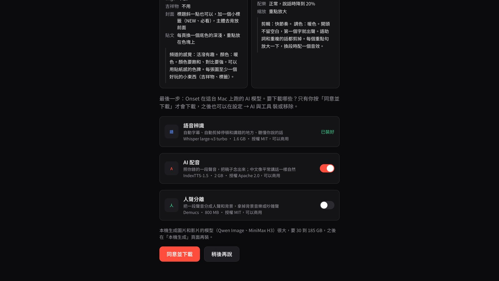
1-7 換 AI、重新登入
想換 AI Onset 的大腦，或 AI 說還沒登入：
- 右上角頭像 →「設定」→「AI 與工具」。
- 最上面就是安裝助手：點另一個寫「可以用了」的 AI 就換過去。
- 還沒登入的按「登入」，終端機會打開，照著在瀏覽器登入。
- 回到 Onset，按「重新檢查」。
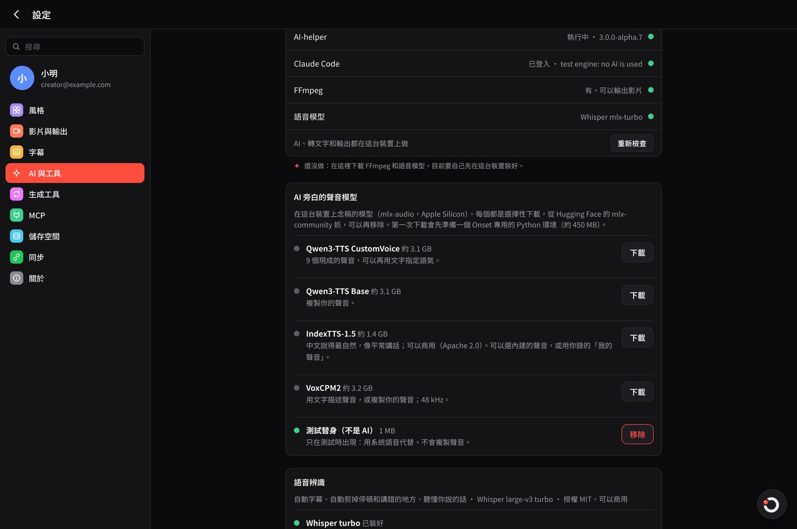
1-8 打開 app 自動登入
不想每次打開都選頭像、打密碼：
- 右上角頭像 →「設定」→ 點最上面你的名字，進到「帳號」。
- 在「登入」那一區，打開「打開 app 自動登入這個帳號」。
- 第一次打開這個選項要輸入一次密碼。
這個設定只在這台裝置有效。登出之後，這次不會自動再進去，下次打開 app 才會。
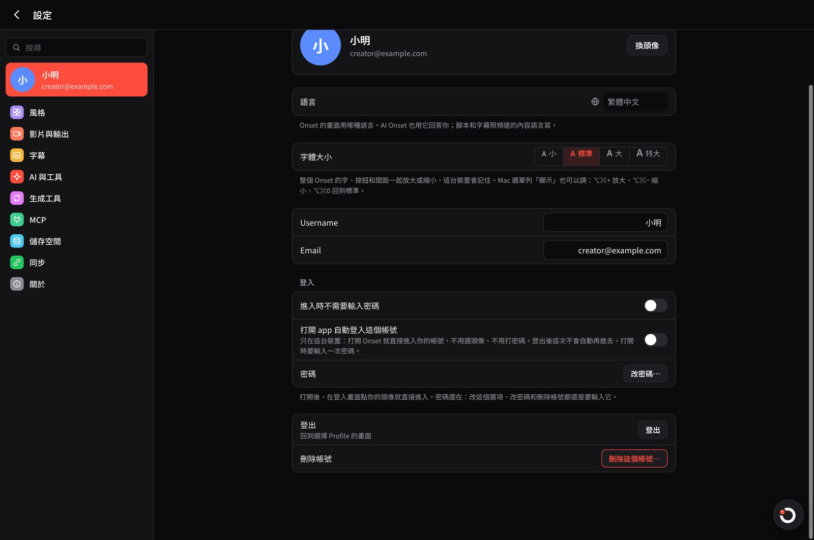
1-9 帳號選單
右上角的頭像可以打開：帳號、設定、語言、登出。
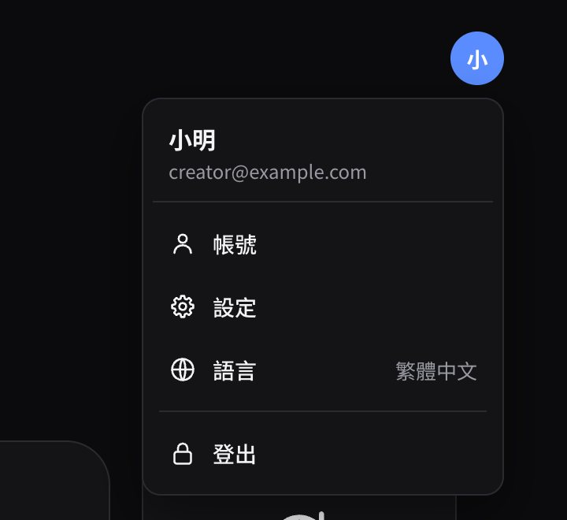
首頁六個入口
登入後的首頁有六個大按鈕。一支影片通常是這樣走的：
寫腳本 → 拍攝 → 剪輯 → 做封面和貼文 → 輸出
沒空拍？用「不拍，直接做」（第 5 章），從腳本直接做成影片。
| 按鈕 | 做什麼 |
|---|---|
| Create Script 寫腳本 | 寫新腳本，或叫 AI 幫你寫 |
| Content 影片與封面 | 你所有的影片、它們做到哪一步、封面和貼文文字 |
| Recording 拍攝 | 用 Mac 或 iPhone 拍，有提詞機 |
| Editing 剪輯 | 剪片、字幕、音樂、調色、輸出 |
| Post Design 圖片貼文 | 做 IG、FB、小紅書等平台的圖片貼文 |
| 本機生成 | 用這台 Mac 生成 AI 圖片和影片（免費，但比較慢） |
左上角的 Onset 圖示可以隨時回到首頁。
2-1 Create Script（寫腳本）
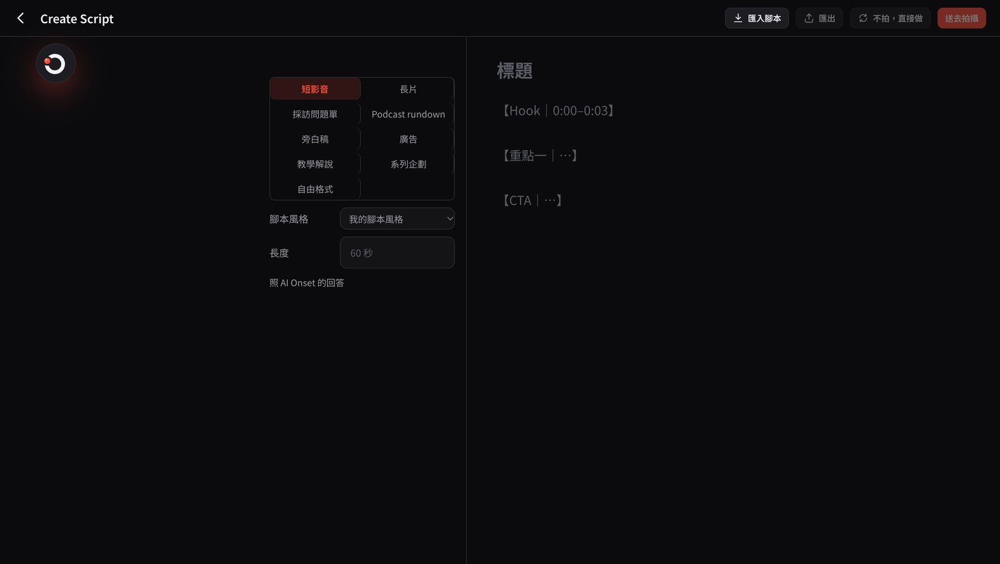
- 中間先選格式：短影音、長片、採訪問題單、Podcast rundown、旁白稿、廣告、教學解說、系列企劃、自由格式。
- 選「腳本風格」（預設是你在問答做出來的「我的腳本風格」）和「長度」。
- 右邊可以自己打，也可以叫 AI 寫：
叫 AI 寫腳本：
- 點左上角的 AI Onset 圓形按鈕，打開對話框。
- 一句話說這一集要講什麼，例如：「幫我寫一支 60 秒的短影音：三個在家煮出好喝手沖咖啡的小技巧」。
- 按送出（或按 🎙 用說的）。
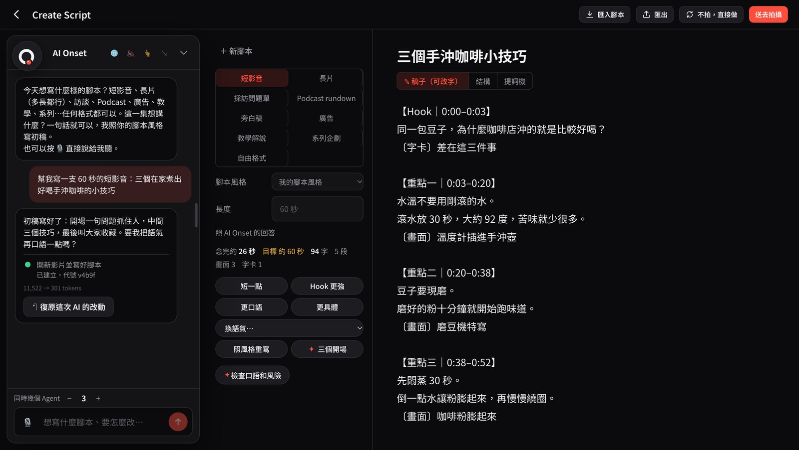
寫好後：
- 中間的按鈕可以再改：「短一點」「Hook 更強」「更口語」「更具體」「換語氣…」「照風格重寫」「三個開場」「檢查口誤和風險」。
- 會顯示「念完約幾秒」「目標」「幾個字」「幾段」。
- 右邊上方三個分頁：「稿子（可改字）」「結構」「提詞機」。
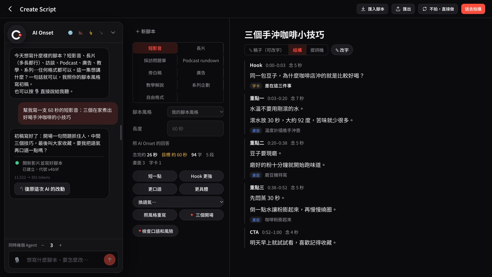
右上角：
- 「匯入腳本」：用已經寫好的檔案。
- 「匯出」：PDF、Word、Markdown、純文字。
- 「不拍，直接做」：不用拍，直接做成影片（第 5 章）。
- 「送去拍攝」：帶著這份腳本去 Recording。
2-2 Content（影片與封面）
所有影片都在這裡。上方可以按狀態篩選：腳本、拍攝、剪輯、完成，或按類型：長片、短片、貼文。
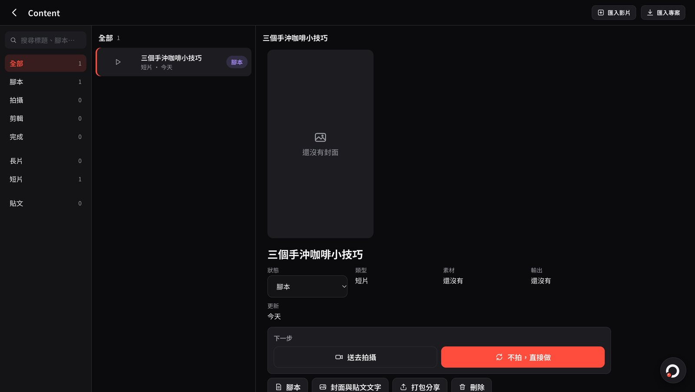
點一支影片，右邊會看到它的狀態、素材、輸出，和「下一步」要做什麼（例如「送去拍攝」或「不拍，直接做」）。
下面的按鈕：
- 腳本：看或改腳本。
- 封面與貼文文字：做封面、寫發文用的文字。
- 打包分享：把整支影片的專案打包給別人。
- 刪除。
做封面
在「封面與貼文文字」裡：
- 「AI 設計」：照你的設計風格自動做。
- 「用一張圖當封面」「AI 生成圖片」「生成庫」「從版型開始」。
- 「AI 寫貼文文字」：幫你寫發文的文案。
- 下面有「AI 製作紀錄」，看得到 AI 做了什麼、用了多少 tokens。
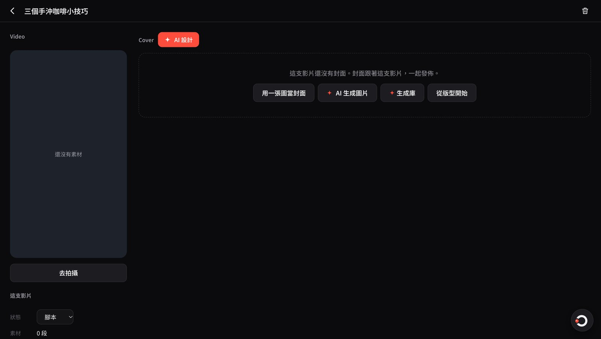
上方的「匯入影片」可以把已經拍好的影片直接加進來。
2-3 Recording（拍攝、提詞機）
從腳本按「送去拍攝」，或從首頁點 Recording。
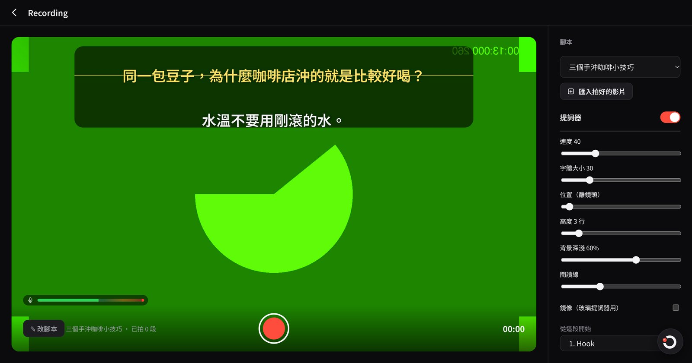
- 右邊「腳本」選要拍哪一份（也可以選「不用腳本」）。
- 提詞機的字會疊在畫面上方。右邊可以調：
- 速度、字體大小、位置（離鏡頭）、高度、背景深淺、閱讀線
- 「自動捲動」或「跟著聲音」：跟著聲音會聽你講到哪裡，自動往下捲。
- 「鏡像」：用玻璃提詞器時勾。
- 「從這段開始」：選從 Hook、重點一…哪一段開始拍；「只拍這一段」會在下一段開頭自動停。
- 按中間的紅色圓鈕開始錄。
其他好用的設定：
- 倒數：開始前倒數 3 秒，可以每秒嗶一聲。
- 語音指令：用說的控制「開始 / 停止 / 暫停 / 繼續 / 重來 / 下一段 / 上一段」。
- 遙控器：藍牙翻頁器、簡報器可以控制。
- 主聲音：選 Mac 的麥克風；錄音介面有多個輸入時，可以每人一軌。
已經用相機或手機拍好了？
按「匯入拍好的影片」，選檔案就好。拍完（或匯入完）按右上角「去剪輯」。
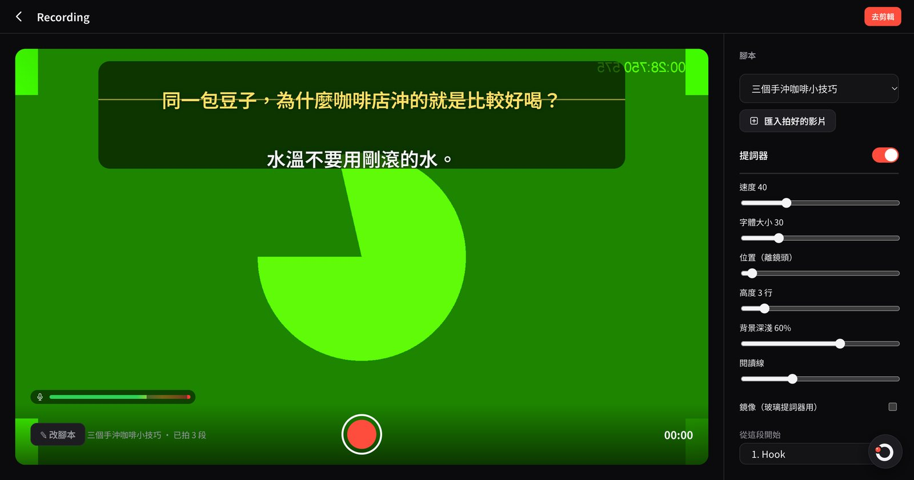
用 iPhone 當相機
畫面來源的「iPhone 攝影機」：在 iPhone 的 Onset 打開錄影 → 設定 →「當 Mac 的攝影機」。要先配對、在同一個 Wi‑Fi（見第 7 章）。勾選的 iPhone 會和 Mac 一起開始、一起停止，錄完自動傳回 Mac，可以組成多機位的 Podcast 影片。
2-4 Editing（剪輯）
點 Editing 會先看到「正在製作」的影片，點一支就能開始剪；也可以按「新建」開一個空白的 16:9、9:16、1:1 或 Podcast 專案。
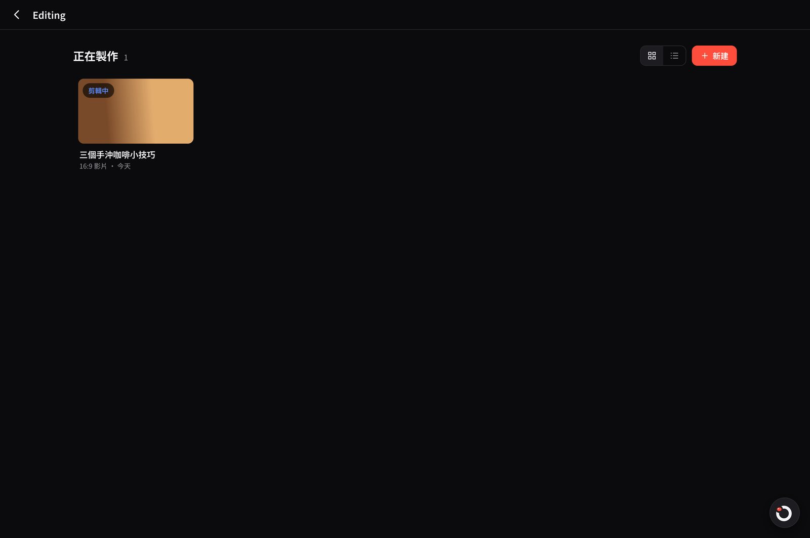
詳細請看 第 3 章。
2-5 Post Design（圖片貼文）
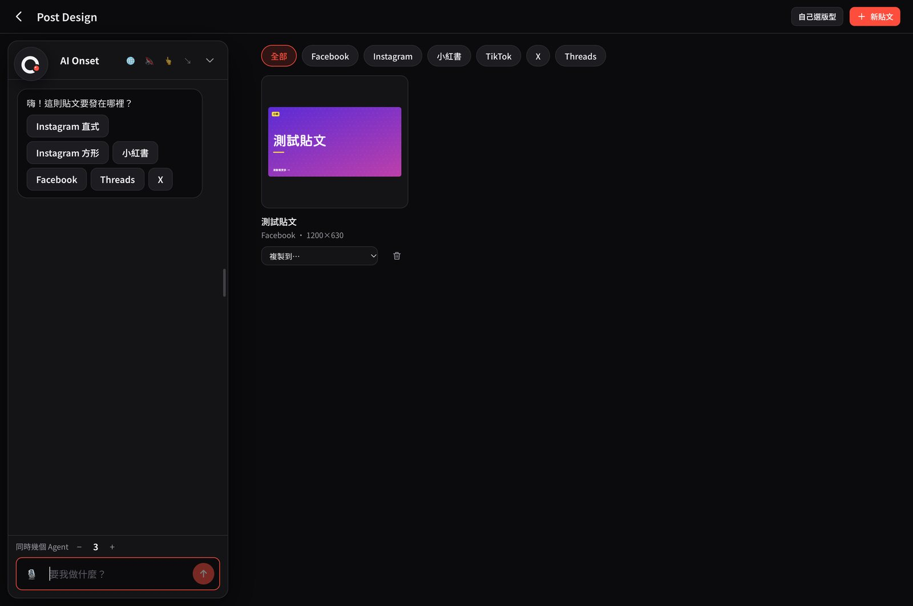
- 按「新貼文」，或跟左邊的 AI Onset 說要發在哪裡（Instagram 直式、方形、小紅書、Facebook、Threads、X）。
- 進到編輯畫面：
- 左邊：平台與尺寸、目的、內容來源、張數、設計風格，按「照這些重新設計」。
- 中間：直接在圖上改。點一下選取、拖曳移動、拉角落改大小，文字點兩下直接改。上方可以加「文字」「一張圖」「AI 生成圖片」「生成庫」「形狀」。
- 右邊：「版型」「圖層」「背景」「風格」「檢查」。版型可以「做成輪播」（封面頁＋每頁一個重點＋結尾頁）。
- 「複製到其他平台…」可以一次做出其他尺寸。
- 做好按右上角「下載」。會自動儲存。
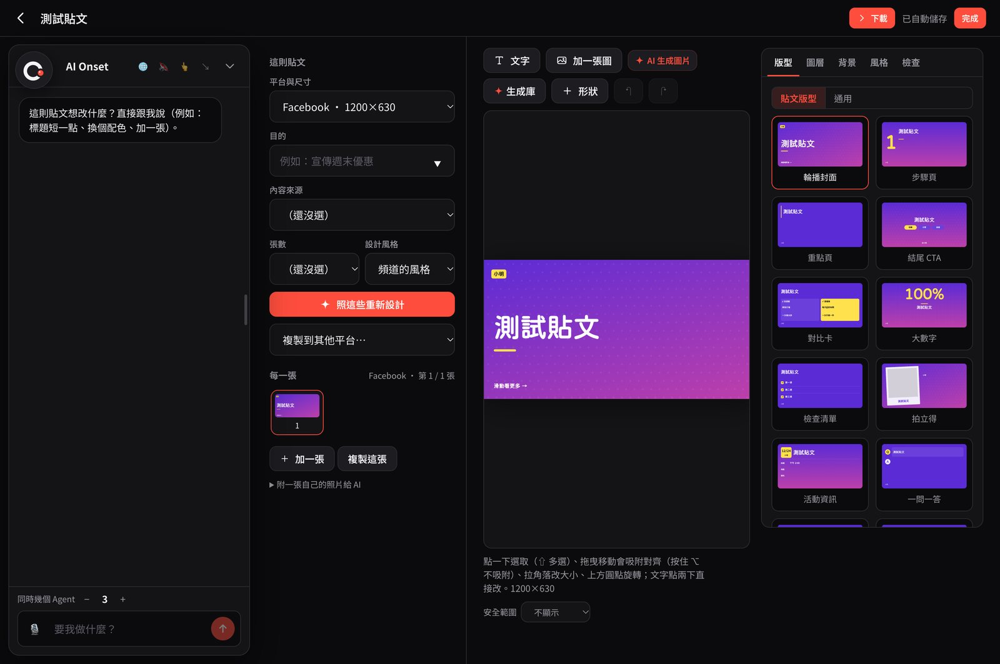
2-6 本機生成（AI 圖片和影片）
在這台 Mac 上生成 AI 圖片和影片：不上雲、不花錢，但比較慢，模型也很大。
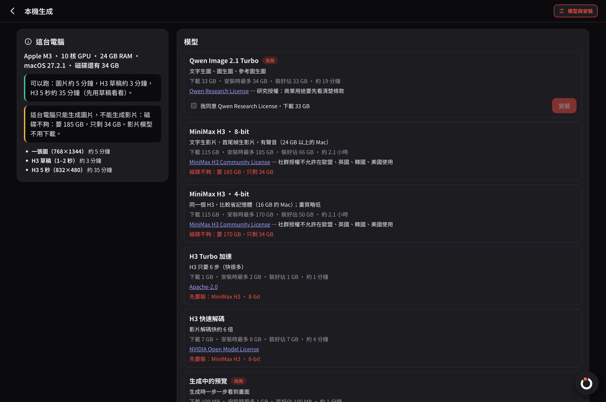
- 頁面上方會先檢查這台電腦：晶片、記憶體、硬碟剩多少，並告訴你能做什麼、大約要多久。
- 模型：
- Qwen Image 2.1 Turbo：生成圖片。下載約 33 GB，一張圖約幾分鐘。 - MiniMax H3（8-bit 或 4-bit）：生成有聲音的影片。下載 115 GB，安裝時最多要 185 GB 空間，5 秒影片約 35 分鐘。
- 每個模型都要先勾同意授權、按「安裝」才會下載。請看清楚授權（例如 Qwen 是研究授權，商業用途要先看條款）。
- 首頁按鈕下面如果寫「只能生成圖片」，表示這台 Mac 的記憶體或硬碟放不下影片模型，只能用圖片模型。
- 一台 Mac 一次只做一段，其他的會排隊。可以停止，做好的圖可以「加到參考圖庫」「用這張做影片」「放進影片…」。
- 只支援 Apple Silicon（M 系列晶片）的 Mac。
Editing 剪輯
3-1 剪輯畫面長什麼樣
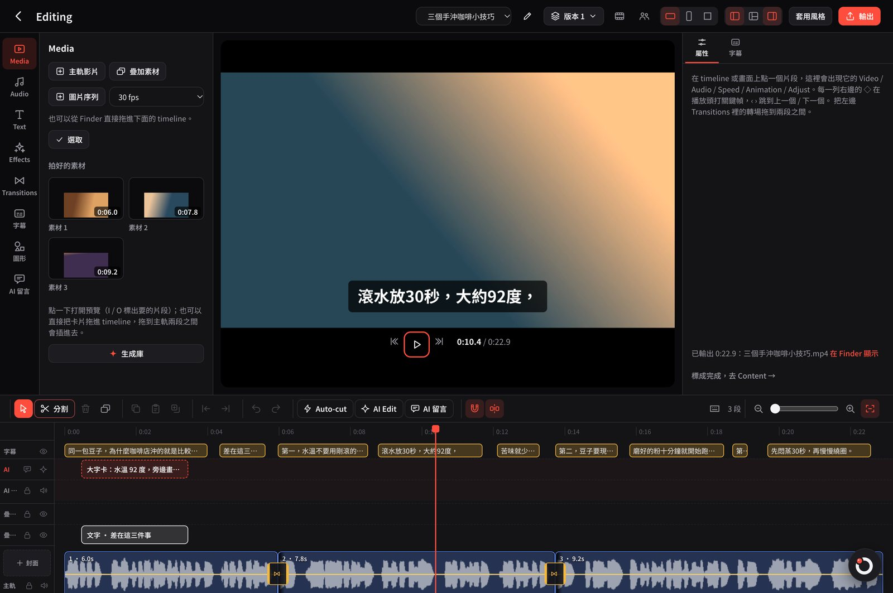
- 左邊：素材和工具。 一排分頁：Media（素材）、Audio（聲音）、Text（文字）、Effects（效果）、Transitions（轉場）、字幕、圖形、AI 留言。
- 中間：預覽畫面。 按 ▶ 播放。
- 右邊：屬性。 點了一個片段，這裡就出現它的設定。
- 下面：時間軸（timeline）。 影片從左到右排好。
- 最上面一排： 影片名稱、「版本」、畫面比例（橫、直、方）、版面配置、「套用風格」、「輸出」。
3-2 時間軸的每一列
由上往下：
| 列 | 放什麼 |
|---|---|
| 字幕 | 自動字幕，一句一段 |
| AI | AI 留言條（寫給 AI 的備註，見 3-8） |
| 疊加 | 疊在畫面上的東西：文字、圖片、子母畫面 |
| 封面 | 這支影片的封面 |
| 主軌 | 主要的影片片段，從頭接到尾 |
| 旁白 | 你錄的或 AI 念的旁白 |
| 音樂 | 背景音樂 |
| 音效 | 叮、咻這類短的聲音 |
每一列左邊有 🔒（鎖住，不會被改到）和 👁 / 🔊（隱藏或靜音）。
3-3 基本剪接
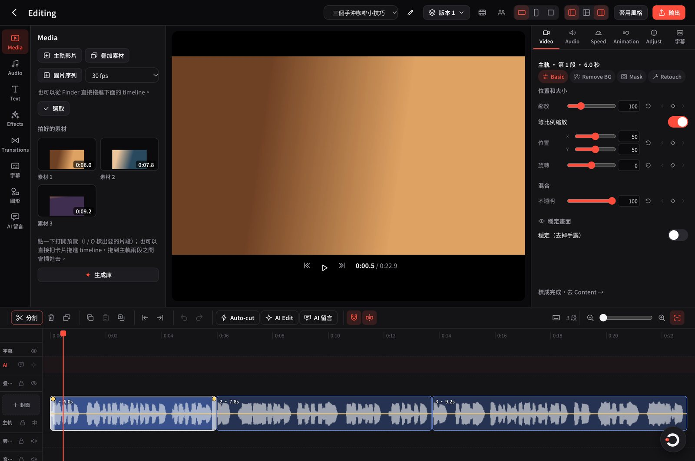
- 放素材： 左邊 Media 的「拍好的素材」，直接拖到時間軸。拖到主軌兩段之間會插進去。也可以從 Finder 直接拖進來。
- 先挑一段再放： 點素材卡片打開預覽，按 I 標開頭、O 標結尾。
- 選取： 點一下片段。右邊會出現 Video / Audio / Speed / Animation / Adjust 這幾個分頁。
- 剪開（刀片）： 按 S（或工具列的剪刀「分割」）換成刀片，滑鼠下面會出現一條紅色虛線。在片段或圖層上點一下，就從點的地方切開；會自動貼齊播放頭和片段邊緣，按住 ⌥ 就不貼齊。
- 回到點選： 按 A、Esc，或刀片左邊的箭頭。點選工具可以選取、拖動片段。
- 在播放頭剪開： 按 ⌘B。（iPhone 上還是用「分割」按鈕在播放頭剪。）
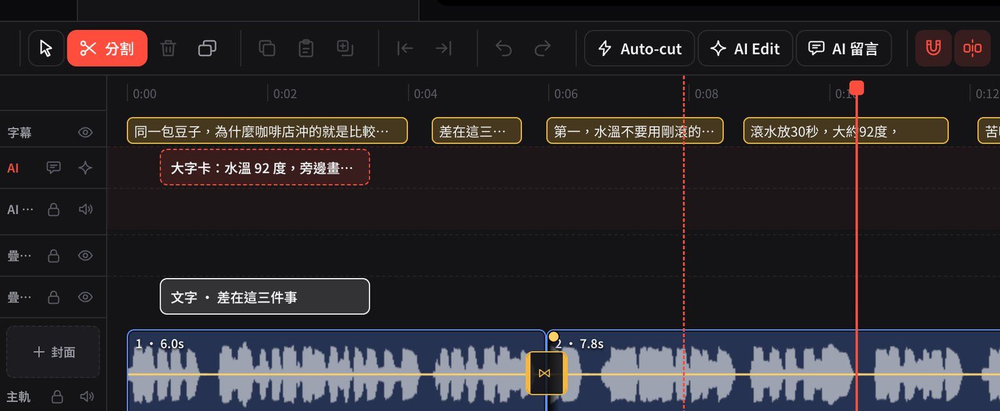
- 剪短： 拖片段的左右邊緣。
- 換順序： 把片段拖到別的位置。
- 刪除： 選取後按垃圾桶。
- 復原： 工具列的 ↶ ↷。
- 工具列右邊的磁鐵是「主軌磁吸」：開著時，片段之間不會留空隙。
- 右下的滑桿可以放大縮小時間軸（Mac 觸控板也可以兩指縮放）。
讓 AI 幫你剪
- Auto-cut：自動剪掉停頓。剪之前的樣子會存成版本「Auto-cut 前」。
- AI Edit：照你說的剪，例如「把講錯和重講的地方剪掉」。長片會一章一章做。
版本
最上面的「版本」可以另存一個版本再大改，改壞了切回舊版本就好。
3-4 片段的設定（右邊屬性）
- Video › Basic：位置和大小、縮放、旋轉、不透明度、混合模式、穩定畫面（去掉手震）。
- Video › Remove BG / Mask / Retouch：去背、遮罩、美顏。
- Audio：音量、淡入淡出、人聲增強、降噪。
- Speed：變速，或用速度曲線（蒙太奇、英雄時刻、子彈時間…）。
- Animation：進場、出場動畫。
- 關鍵幀：每一列右邊的 ◇ 會在播放頭打一個關鍵幀，‹ › 跳到上一個、下一個。
3-5 文字和文字排版
- 左邊點「Text」。
- 點一下樣式（「文字」或一種「飛」字動畫），就會加到播放頭的位置。
- 在預覽畫面上拖曳移動、拉角落改大小、上方的圓點旋轉。
- 右邊「Video › Basic」改內容和排版。
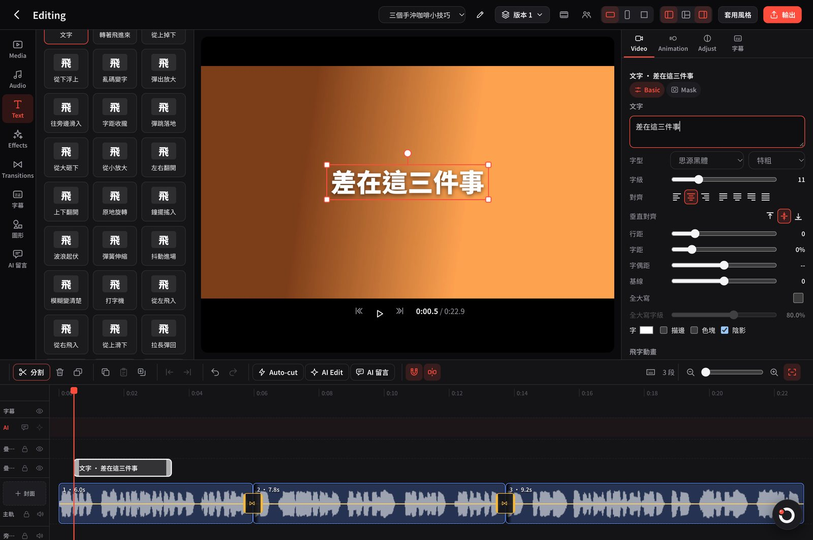
排版面板可以調：
- 文字內容
- 字型（思源黑體、粉圓體、芫荽手寫、明體、楷體、圓體…）和樣式（極細到特粗，可加斜體）
- 字級
- 對齊（靠左、置中、靠右、齊行）和垂直對齊
- 行距、字距、字偶距、基線
- 全大寫和全大寫字級
- 字的顏色、描邊、色塊、陰影
- 飛字動畫：40 多種，例如「轉著飛進來」「亂碼變字」「打字機」「彈跳落地」；可以整段一起動，或一個字、一個詞輪流動。
3-6 字幕
- 左邊點「字幕」→「轉文字（自動字幕）」。
- 等一下，字幕會一句一句出現在最上面的字幕列。
- 打錯的字：在「句子（點一下修改）」清單裡點那一句直接改。
- 樣式、字級、位置、字體、顏色：右邊的「字幕」面板。
- 「輸出時帶字幕」決定輸出的影片要不要燒上字幕。
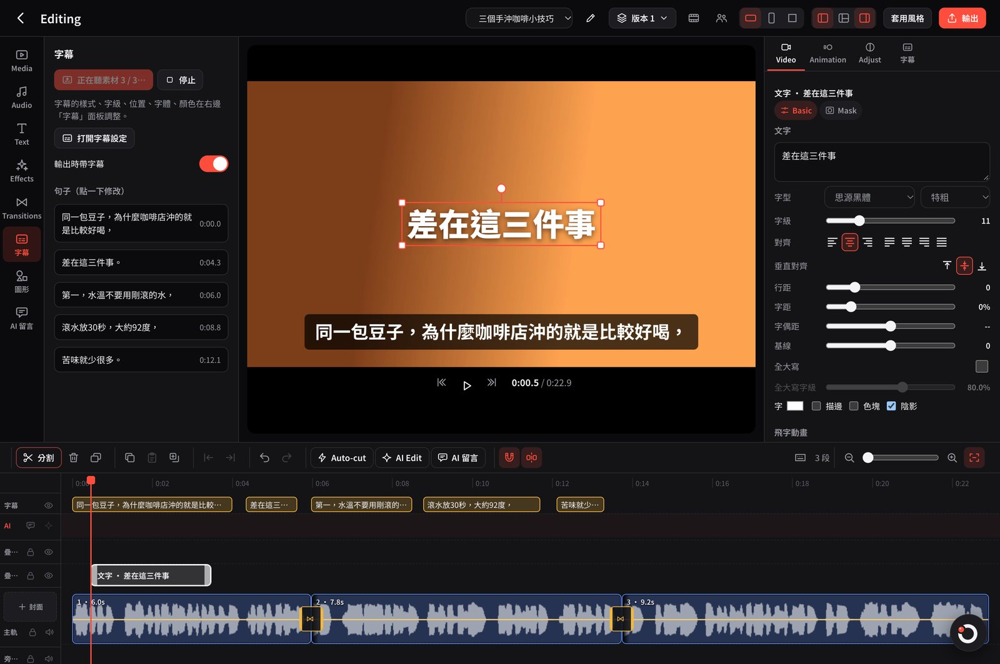
3-7 聲音：旁白、音樂、音效
左邊點「Audio」：
- 「錄旁白」：直接用麥克風錄。
- 「聲音檔」：放自己的音樂或聲音。拖進來先放在「音樂」列，右邊屬性可以改成旁白或音效。
- 「AI 旁白」：用 AI 念稿（要先在「設定 → AI 與工具」下載聲音模型）。
- 「Onset 內建音樂與音效」：全部免費、不用標作者。按 ▶ 試聽，按「加入」放到播放頭。
有人說話時，音樂可以自動變小（閃避）。
3-8 AI 留言條
想要一張圖卡、一段動畫，又不想自己做？寫一張「留言條」給 AI：
- 左邊點「AI 留言」→「AI 留言條」。時間軸最上面的 AI 列會多一條。
- 拖它的位置和長短，對準要出現的那幾秒。
- 右邊寫這段要什麼，例如「大字卡：水溫 92 度，旁邊畫一個溫度計」。
- 選「工具」：「自動（看文字判斷）」、Onset 圖卡、EffectCraft、Three.js、去背（字在人後面）…；付費的「Higgsfield（付費生成）」「Theater（付費生成）」，和用你方案的「Cursor（圖片，用你的方案）」「ChatGPT（圖片，用你的方案）」，要先在設定加入雲端（第 6 章）。
- 按「生成」，或「全部生成」一次做完所有留言條。
做出來的圖層會放在留言條下面。留言條本身不會出現在影片裡。 「自動」永遠不會自己選付費工具；選了付費工具，也會先報價、問你才做。
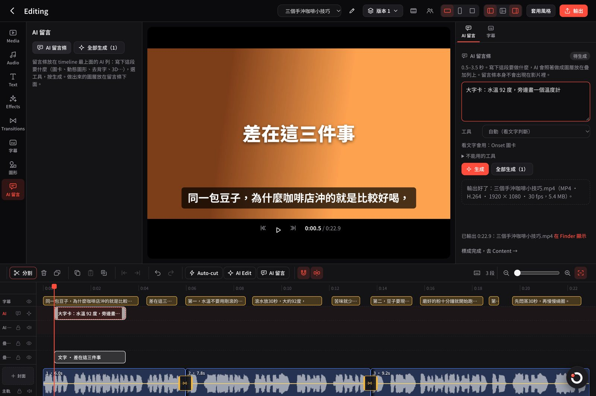
給 AI 留言條參考圖
想要 AI 照著某張圖的感覺做？給它參考圖，最多 4 張：
- 把圖拖到留言條文字下面的「把參考圖拖進來（或點這裡選）」，或點那裡選檔案，也可以貼上。
- 或直接把圖拖到 timeline 上的那條 AI 留言條上（會變成它的參考圖，不會變成新的圖層）。
- 每張圖右上角的 ✕ 可以拿掉。
用 Theater、Cursor 或 ChatGPT 生成時，會照著參考圖做。Higgsfield 不收參考圖，只有寫 prompt 的 AI 看得到；要照著圖做請選其他的。
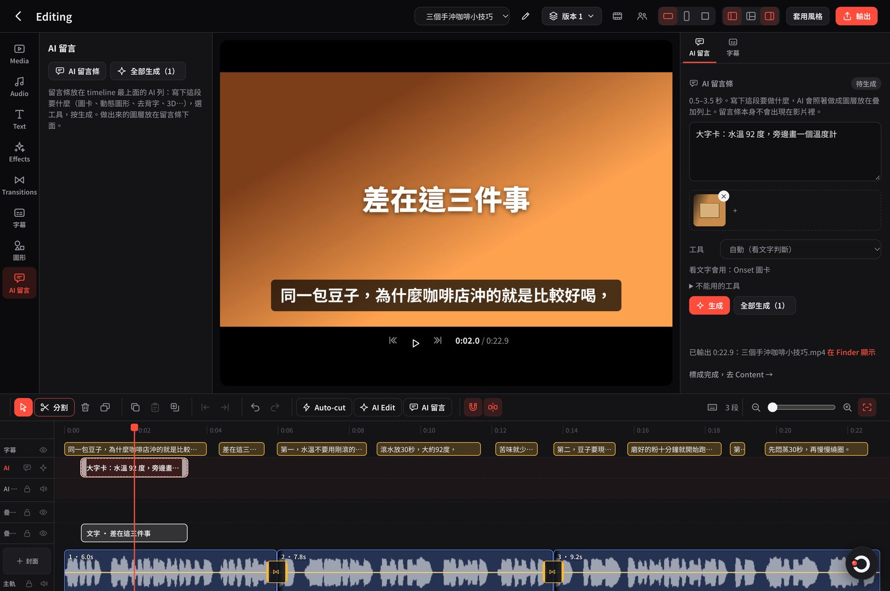
3-9 轉場
- 左邊點「Transitions」。
- 把喜歡的轉場拖到時間軸兩段之間。剪接點上會出現一個小方塊。
- 拖小方塊的邊緣可以改長度；選取後按刪除可以拿掉。
- 懶得一個個放：按最下面「每個剪接點都加「交叉淡化」」；「全部移除」可以一次拿掉。
共 39 種，分五組：淡化、推移、擦除、形狀、動態（例如甩鏡、故障、翻轉）。
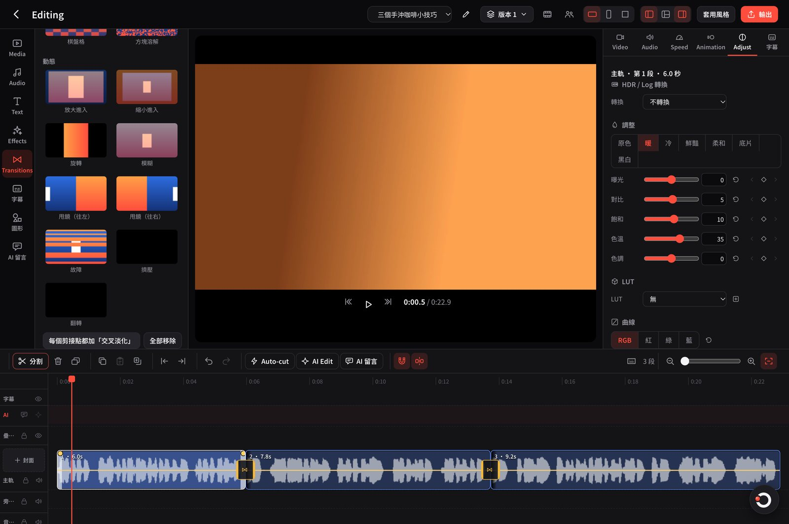
3-10 調色
選一個片段 → 右邊「Adjust」：
- 調整：先點一個現成風格（原色、暖、冷、鮮豔、柔和、底片、黑白），再用滑桿微調曝光、對比、飽和、色溫、色調。
- LUT：內建暖色、冷色、底片、青橙、黑白、復古、高對比，也可以「匯入 .cube 檔…」。
- 曲線、色輪（暗部、中間調、亮部）：進階用。
- HDR / Log 轉換：iPhone HDR、Apple Log、Sony S-Log3 拍的影片，轉成一般顏色。
- 「套用到全部片段」：一段調好，全部一樣。「全部重設」回到原本。
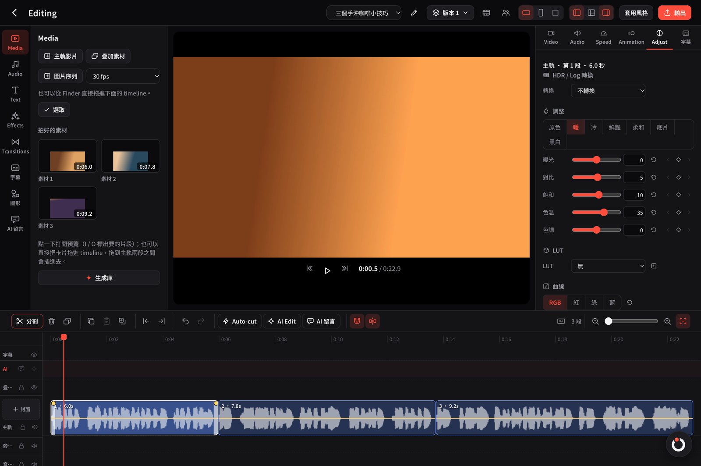
3-11 輸出
- 右上角按「輸出」。
- 「預設」直接選平台最簡單：
- YouTube（MP4 · 1080p）
- Reels / TikTok / Shorts（直的 1080×1920）
- 小紅書
- 存檔母帶（MOV · ProRes，檔案很大）
- 小檔（傳訊息用，720p）
- 只要聲音（MP3）
- 想自己設，選「自訂」：格式（MP4、MOV、MP3、WAV、AAC）、編碼、解析度、幀率、碼率、畫質。
- 只要一小段：勾「只輸出一段」。
- 看「存到」：
- 「更改…」選別的資料夾；「在 Finder 顯示」打開那個資料夾。
- 勾「每次輸出都問我存在哪裡、叫什麼名字」：每次輸出前都會跳出存檔視窗。
- 按「輸出」。上方會顯示「輸出中 xx%」，做完會出現「在 Finder 顯示」。
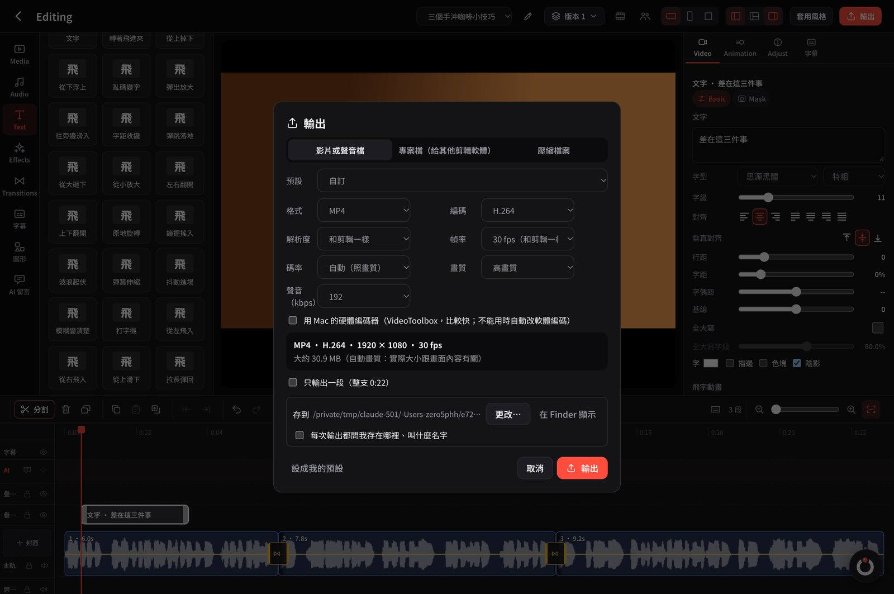
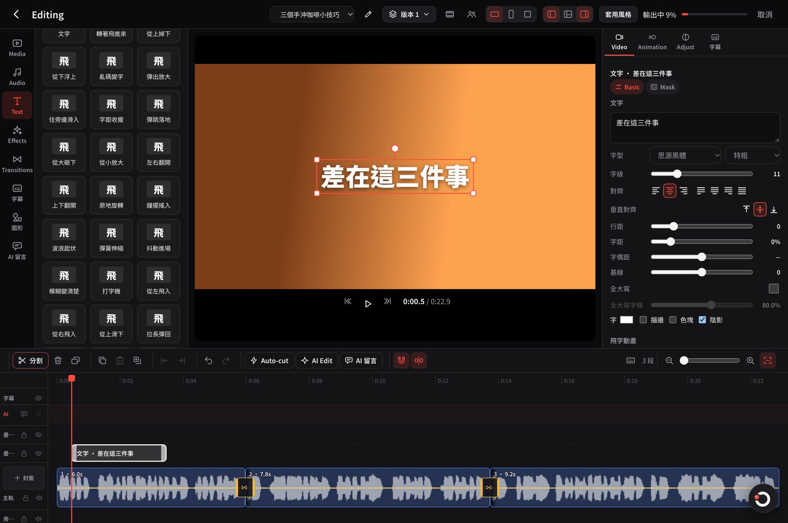
給其他剪輯軟體
輸出視窗的第二個分頁「專案檔（給其他剪輯軟體）」可以存成 FilmCraft、CapCut 草稿、Premiere / DaVinci（XML）、Final Cut Pro（FCPXML）。勾「把用到的原檔複製到專案旁邊」，整個資料夾就能搬走或傳給別人。
第三個分頁「壓縮檔案」可以做出比較小的檔案。
AI Onset：叫 AI 幫你做事
4-1 怎麼叫它
- 每次打開 Onset，AI Onset 的圓形按鈕都在右下角。點它就打開對話框。
- 或在任何畫面按 ⌘J。
- 用打的，或按 🎙 用說的：按著說話放開就送出；或點一下開始說，停 2 秒沒說話會自動送出。
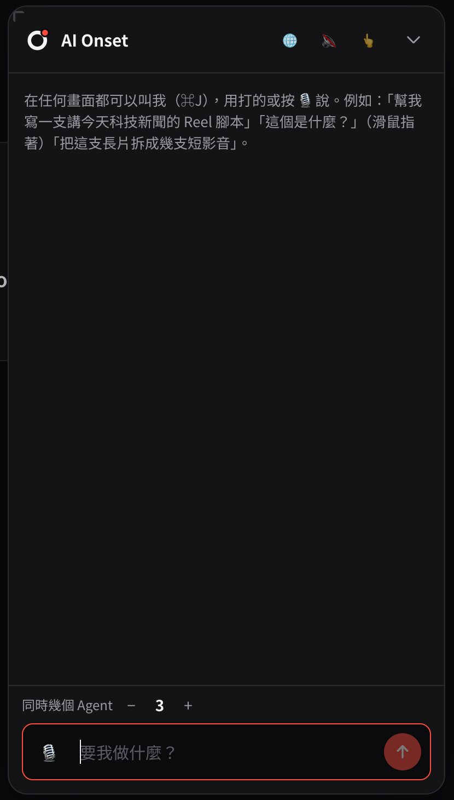
可以叫它做的事，例如：
- 「幫我寫一支講今天科技新聞的 Reel 腳本」
- 「顏色統一一點，重點句放大，轉場換成閃白」
- 「把這支長片拆成幾支短影音」
- 「這個是什麼？」（先按 👆 再點畫面上的東西）
4-2 做新東西之前，它會先問你
叫它做新的內容（新影片、腳本、不拍直接做、飛字或動態字、封面、貼文、拆短影音）時，AI Onset 會先問幾個問題，一次一個，每個都有按鈕：
- 風格：照頻道的風格、不套用（自由發揮）、或其他（告訴它是什麼風格）。
- 要不要 AI 生成畫面：用本機 AI（免費但比較久）、用雲端（要 credits）、都可以（本機先）、或不要生成（用素材、動畫圖卡、飛字）。
- 還沒說的長度或畫面比例（直的 9:16、橫的 16:9、方的 1:1）。
- 不拍直接做時：要不要 AI 旁白、配樂。
按按鈕回答就好，也可以用打的。你這次已經說過的，它不會再問。 不想一直回答？按「其他照你建議」，剩下的它照最好的判斷直接做。
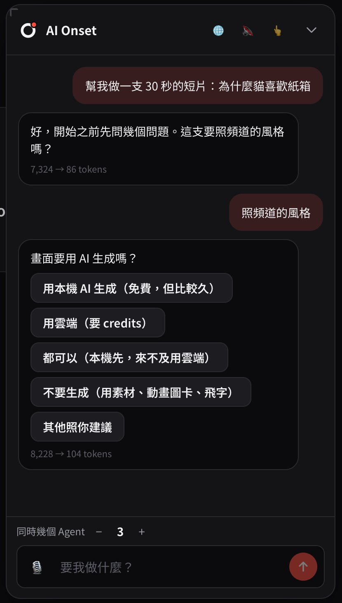
想要這次不照頻道風格，也可以直接說「這次不要照我的風格」。它會一直照這個設定，直到你再說「照我的頻道風格」。
4-3 給它看參考圖
想讓 AI 照某張圖的感覺做？
- 把圖片拖到 AI Onset 的對話框上，或拖到角落的圓形按鈕上。
- 或複製圖片後，在對話框按 ⌘V 貼上。
圖會出現在輸入框上面（右上角的 ✕ 可以拿掉），跟你下一句話一起交給 AI 當參考。
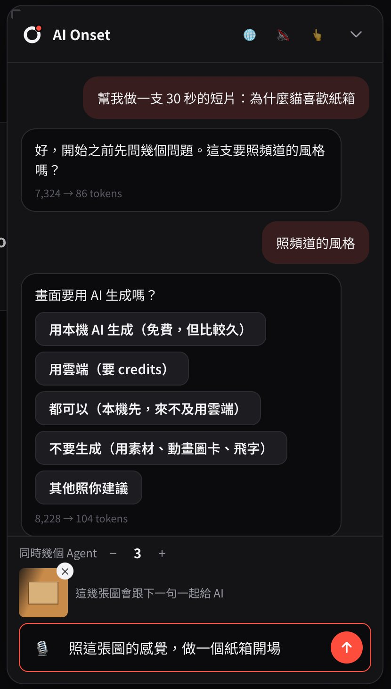
想給某一條 AI 留言條參考圖，請看 第 3 章 3-8。
4-4 上方的小圖示
| 圖示 | 意思 |
|---|---|
| 🌐 | 能不能上網查資料。點一下切換：需要時自動查 → 每次都可以查（🌐!）→ 關 |
| 🔇 / 🔊 | 回答要不要念出來 |
| 👆 | 「指一下」：再點畫面上任何東西問它（也可以按住 ⌥⇧ 點一下） |
| ↘ | 把對話框收回角落（在剪輯頁旁邊時才有） |
4-5 它做的每一步都看得到
叫它做事後，對話框裡會列出它要做的每一步，做完一步打一個綠點，旁邊寫做了什麼。
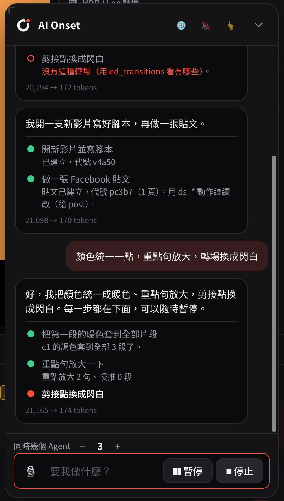
- 做的時候下面有「❚❚ 暫停」和「⏹ 停止」，隨時可以按。暫停後按「▶ 繼續」。
- 對話框收起來時，畫面上會有一條小狀態列「Onset 正在做：…」，上面也有暫停和停止。
- 時間軸、畫面會跟著動，你可以看著它改。
- 做完會出現「↶ 復原這次 AI 的改動」。不滿意一鍵退回。
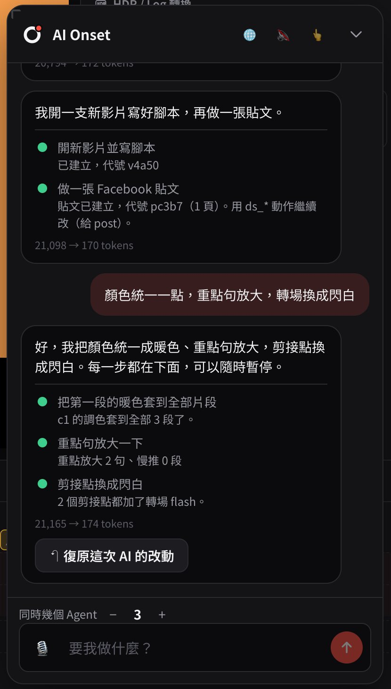
4-6 同時幾個 Agent
對話框下方有「同時幾個 Agent − 3 +」。
- Agent 就是同時一起工作的 AI 幫手。數字越大，大工作（例如「不拍，直接做」整支影片）做得越快，但電腦也越忙。
- 可以設 1 到 10 個；Onset 會看這台電腦的狀況，太多時會告訴你「這台電腦現在最多同時幾個」。
- 好幾個 Agent 一起工作時：
- 時間軸上方有彩色帶子，標出每個 Agent 正在處理哪一段（寫著「名字 · 步驟」）。 - 每個 Agent 有自己顏色的游標，會飛到它正在改的地方：某個片段、字幕列、音樂或旁白列、AI 列，調色時飛到預覽畫面上。 - 可以「全部暫停」「全部繼續」「全部停止」，也可以只停其中一個。
4-7 換 AI Onset 的大腦
AI Onset 可以用這四個 AI 當大腦：Claude Code、ChatGPT · Codex、Cursor、Hermes。在「設定 → AI 與工具」最上面（也就是安裝助手）選。哪些要帳號、怎麼登入，請看 第 1 章 1-4。
- 只有已經裝好、可以用的 AI 才能選。
- 選的 AI 做不到的事（例如 Cursor 不能查網路、看圖片），會交給 Claude Code 代答，畫面會說「這次由 Claude Code 代答」；Claude Code 也沒有的話，會直接告訴你做不了。
4-8 讓外部 AI 操作 Onset（進階）
「設定 → MCP」可以「允許外部 AI 在 Onset 裡工作」，例如讓 Claude Desktop 或 Claude Code 直接操作 Onset。外部 AI 做的每一步也會出現在 AI Onset 裡，標「🔌 外部 AI」，一樣能停止。外部 AI 不能拍攝、刪除或發佈。
不拍，直接做
沒時間拍、或這個題目根本拍不到（例如火星探測車）？只要有腳本，Onset 可以幫你做出整支影片：旁白、飛字、字卡、網路素材、生成的圖片和影片，再加字幕，一次放好在時間軸上。
過程看得到，隨時可以停，做完可以一次復原。
5-1 從哪裡開始
- Create Script 右上角的「不拍，直接做」。
- Content 選一支影片，「下一步」裡的「不拍，直接做」。
- 或直接跟 AI Onset 說：「這支不拍，直接做成影片」。它會先用按鈕問你風格、要不要 AI 生成、長度和比例、要不要旁白配樂（見第 4 章 4-2）。
5-2 選怎麼做
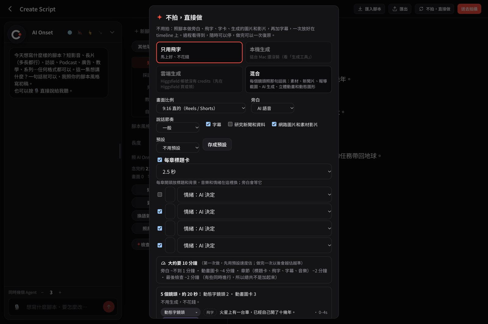
上面四個大按鈕選一個：
| 選項 | 說明 |
|---|---|
| 只用飛字 | 馬上好、不花錢。畫面用文字動畫和圖卡 |
| 本機生成 | 用這台 Mac 生成圖片和影片。免費，但每段要幾分鐘 |
| 雲端生成 | 用 Higgsfield 或 Theater 生成。要花錢，每一段都先報價 |
| 混合 | 每個鏡頭照那句話自動挑：素材、新聞片、報導截圖、AI 生成、立體動畫、動態圖形 |
不能用的選項會變灰，並寫原因（例如「這台 Mac 還沒裝」「帳號沒有 credits」）。
接著設定：
- 畫面比例：16:9 橫的（YouTube）、9:16 直的（Reels / Shorts）、1:1 方的。
- 旁白：AI 語音，或不要旁白。
- 說話節奏：緊、一般、慢。
- 勾選：「字幕」「研究新聞和資料」「網路圖片和素材影片」「每個鏡頭都疊飛字」。
- 同時幾個 Agent：越多越快（見第 4 章）。
- 每章標題卡：每章開頭放標題和背景，可以選每章的情緒（緊張、好奇、感動、平靜、反思）。
- 常用的設定可以「存成預設」。
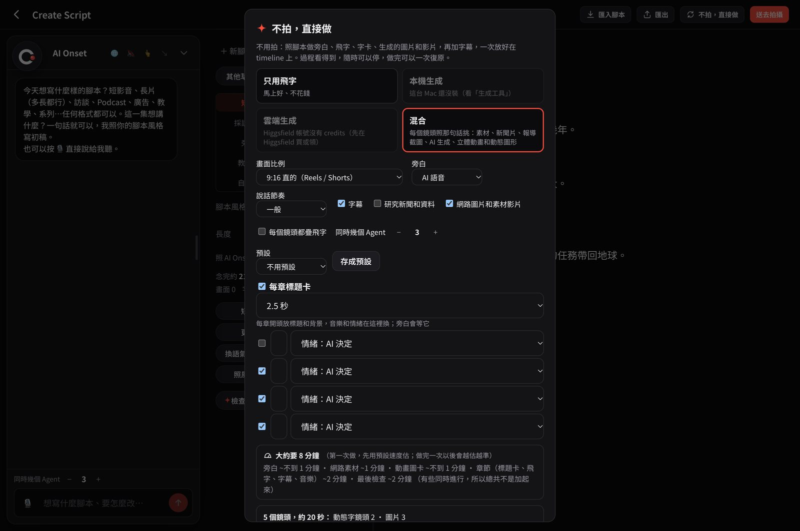
5-3 看時間、看分鏡
往下捲：
- 時間計算器：「大約要 X 分鐘」，還有每個階段（旁白、網路素材、動畫圖卡、本機生成、雲端生成、最後檢查）各要多久。第一次用預設速度估，做過幾次後會越估越準。
- 分鏡清單：每個鏡頭一行，寫著那句話、幾秒、用什麼做。
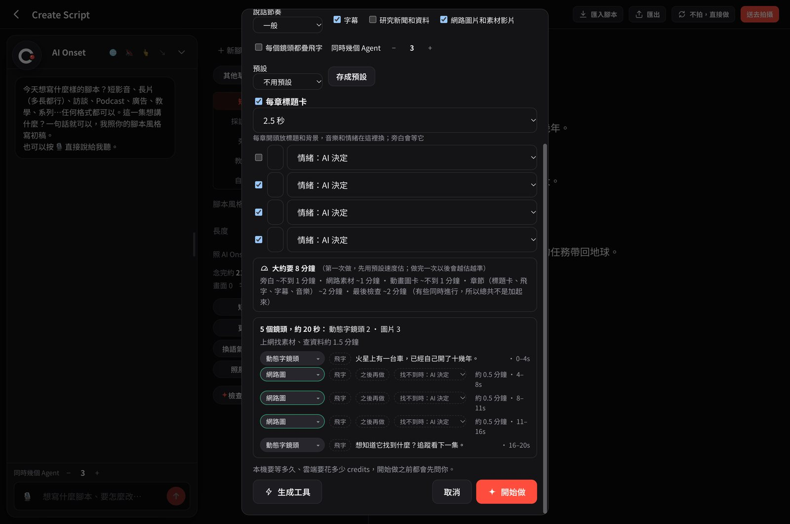
5-4 每個鏡頭的來源
每一行最左邊的按鈕可以換這個鏡頭用什麼做：
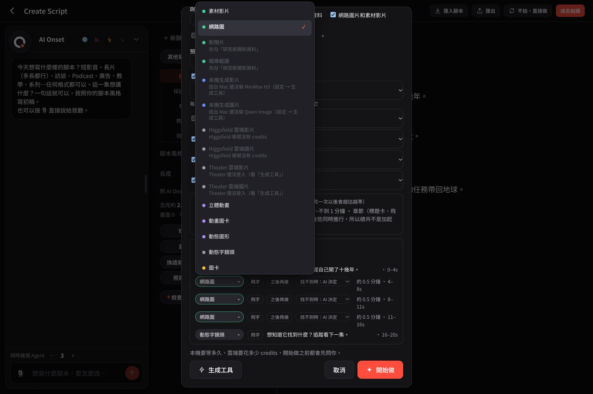
| 來源 | 是什麼 |
|---|---|
| 素材影片 | 網路上免費的素材影片 |
| 網路圖 | 網路上找到、授權可以用的圖片 |
| 新聞片 / 報導截圖 | 新聞影片、新聞網頁截圖（要先勾「研究新聞和資料」） |
| 本機生成影片 / 圖片 | 這台 Mac 用 MiniMax H3 / Qwen Image 生成 |
| Higgsfield 雲端影片 / 圖片 | 用你的 Higgsfield 帳號生成（花 credits） |
| Theater 雲端影片 / 圖片 | 用你的 Theater 帳號生成（先報價） |
| Cursor 圖片 / ChatGPT 圖片 | 用你的 Cursor 或 ChatGPT 方案做圖片（不另外標價，先問你；要先加進雲端清單，見第 6 章） |
| 立體動畫 | 3D 動畫 |
| 動畫圖卡 | 會動的資訊圖卡 |
| 動態圖形 | EffectCraft 做的動態圖形 |
| 動態字鏡頭 | 一拍一個大字、背景換色、鏡頭推拉甩 |
| 圖卡 | 靜態圖卡 |
每一行還有：
- 「飛字」開關：要不要在畫面上疊文字。
- 「優先 / 之後再做」：重要的先做。
- 「找不到時：」網路找不到素材怎麼辦（AI 決定、免費素材片、立體動畫、AI 生成圖片、動畫圖卡）。
5-5 主角參考圖
腳本裡如果有一個「長得固定」的主角（例如某台探測車、你的產品），AI 生成的每張圖應該都長得一樣。Onset 會自動處理：
- AI 從腳本找出最多 3 個主角。
- 上網找授權可以用的真實照片，去背後存進「本機生成 → 參考圖庫」，名字是「參考：名字」。
- 之後畫 AI 圖、做本機影片、用 Theater 生成時，都會照著這張參考圖畫。
想換掉或刪掉：到「本機生成」的參考圖庫。下一支同主題的影片會沿用。
5-6 本機時間上限
選「本機生成」或「混合」時，會多一個「本機最多」：10、30、60 或 120 分鐘。
本機生成很慢（一段影片可能半小時）。時間用完時，剩下還沒做的鏡頭會自動改成動畫圖卡，不會一直等。本機正在忙別的工作時，也會直接用動畫圖卡。
5-7 要花錢的，先問你
畫面最下面寫著：「本機要等多久、雲端要花多少 credits，開始做之前都會先問你。」
- Higgsfield：先報 credits，例如「雲端生成 N 段，報價共 X credits，要花這些 credits 嗎？」按「不要」，這幾段會改成飛字。
- Theater：先估價，例如「估價共 US$…，要做嗎？」
- Cursor / ChatGPT：不報價，用你方案的用量，也是先問你「要做嗎？」。
5-8 開始做、做完之後
- 按「開始做」。
- 可以去做別的事。AI 會在背景一章一章做：一章旁白念好，那一章的動畫、飛字、字幕、配樂就開始做。
- 做好的東西直接出現在剪輯的時間軸上，跟自己剪的一樣，可以再改。
- 想重來：跟 AI Onset 說「重做」。舊的剪輯會先存成版本「重做前 日期」。
- 中途關掉 Onset 也沒關係，下次打開剪輯頁會問「接著做」還是「不用了」。
旁白有一句念得不好？
旁白每一句是一個獨立的片段。在那一句上按「重念 #n 這句」，會用同一個聲音再念一次，後面的片段和字幕會自動對好。
雲端生成：Higgsfield 和 Theater
本機生成免費但很慢，有些 Mac 也跑不動影片模型。雲端生成用你自己的雲端帳號，在別人的電腦上生成，快很多，但要花錢。
Onset 可以接四家：Higgsfield、Theater，以及只做圖片的 Cursor 和 ChatGPT。可以都加，每個鏡頭各自選用哪一家。
6-1 加入雲端服務
- 右上角頭像 →「設定」→「生成工具」，往下捲到「雲端生成」。（「不拍，直接做」視窗左下的「生成工具」也會帶你到這裡。）
- 按「＋ 加入雲端服務」→「選一個…」→ 選 Theater、Higgsfield、Cursor 或 ChatGPT。（Cursor 和 ChatGPT 要自己手動加進來。）
- 按「登入 Theater」或「登入 Higgsfield」：
- Theater：不用裝東西，按了會打開 Theater 的登入頁，在瀏覽器登入。
- Higgsfield：要先裝 Higgsfield 的小工具（畫面會給一行安裝指令，請懂電腦的朋友幫忙貼到終端機），再按「登入 Higgsfield」在瀏覽器登入。
- 回到 Onset 按「重新檢查」，看到「已登入」就好了。
Onset 不看也不存你的密碼，登入都在瀏覽器裡做。
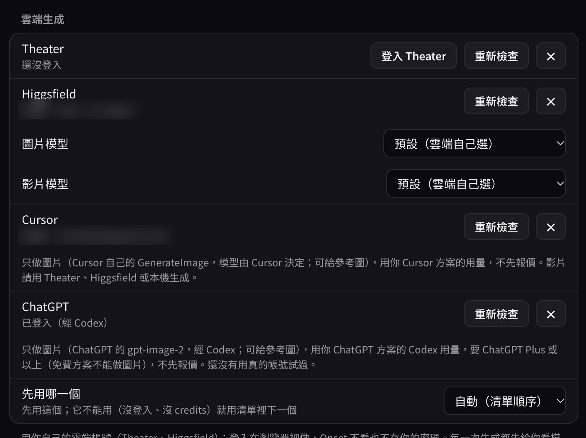
不想用了，按那一行的 ✕「從清單拿掉」。
6-2 先用哪一個
「先用哪一個」：
- 自動（清單順序）：先用清單上面那一個；它不能用（沒登入、沒 credits）就用下一個。
- 或指定一家。
6-3 選模型和畫素
登入後，每一家下面會出現：
- 「圖片模型」「影片模型」：預設是「預設（雲端自己選）」，也可以指定一個。
- 選了模型後，可以再選「畫素」（解析度）。畫素越高通常越貴。
6-4 Higgsfield credits 和 Theater 報價有什麼不同？
| Higgsfield | Theater | |
|---|---|---|
| 怎麼付錢 | 用帳號裡的 credits（要先在 Higgsfield 買或領） | 照每次的報價，從你的 Theater 帳號扣 |
| Onset 看得到餘額嗎 | 看得到，例如「已登入（方案，N credits）」 | 看不到，以 Theater 帳號為準 |
| 開始前會問什麼 | 「報價共 X credits，要花這些 credits 嗎？」 | 影片：「估價共約 US$…，要做嗎？」；圖片寫「Theater 先報價」 |
| 不答應會怎樣 | 那幾段改成飛字 | 不做 |
兩家都是你答應才會花錢。
6-5 Cursor 和 ChatGPT：用你的方案做圖片
如果你已經有 Cursor 或 ChatGPT 的訂閱，也可以用它們來做圖片：
- 只做圖片，不做影片。 影片請用 Theater、Higgsfield 或本機生成。
- 可以給參考圖（第 3、4 章）。
- 用你方案的用量，沒有每張的價錢。 開始前會問「用你 Cursor（或 ChatGPT）方案的用量，要做嗎？」，按「用 Cursor 做」或「用 ChatGPT 做」才會做。不做的話，那幾段改成飛字。
- Cursor：用登入好的 Cursor 帳號（在「設定 → AI 與工具」安裝並登入 Cursor）。
- ChatGPT：經 Codex，用你的 ChatGPT 帳號，要 ChatGPT Plus 或以上（免費方案不能做圖片）。用量用完時，Onset 會告訴你什麼時候可以再做。
加進清單後，在這些地方都能選它們：
- 不拍，直接做：每個鏡頭的來源選「Cursor 圖片」或「ChatGPT 圖片」（第 5 章）。
- AI 留言條：「工具」選「Cursor（圖片，用你的方案）」或「ChatGPT（圖片，用你的方案）」（第 3 章）。
- AI Onset：直接說「用 ChatGPT 畫這張」也可以。
6-6 哪裡會用到雲端生成
- 不拍，直接做：選「雲端生成」或「混合」，或在分鏡清單把某個鏡頭換成「Higgsfield 雲端影片」「Theater 雲端圖片」等（第 5 章）。
- AI 留言條：「工具」選「Higgsfield（付費生成）」或「Theater（付費生成）」。按生成會先顯示「報價中…」，再問「要做嗎？」（第 3 章）。
- 「自動」選工具時，永遠不會自己選付費的。
參考圖
給 AI 留言條或 AI Onset 的參考圖（第 3、4 章）：Theater、Cursor、ChatGPT 會照著參考圖做；Higgsfield 不收參考圖，只有寫 prompt 的 AI 看得到。要照著圖做，請選 Higgsfield 以外的。
iPhone app 和同步
Onset 也有 iPhone / iPad 版。手機和 Mac 配對後，影片、腳本、時間軸和貼文會互相同步。
7-1 手機上能做什麼

手機自己就能做：
- 匯入影片和照片（從照片圖庫、拍照或錄影、檔案）
- 整個剪輯：剪、分割、修剪、排順序、字幕和字幕樣式、轉場、圖層、音樂和旁白、調色
- 語音轉文字（用 Apple 的語音辨識）
- 輸出 9:16 或 16:9 的 MP4（存到「檔案 → Onset」和「照片」）
- 拍攝，有提詞機
- 圖片貼文設計
- 「生成」：看 Mac 生成過的圖片和影片；用 Apple 的 Image Playground 畫圖；或讓 AI 幫你寫好給 ChatGPT / Gemini / Grok 的 prompt，照步驟去那邊生成、再匯入（不會花 Onset 的錢）
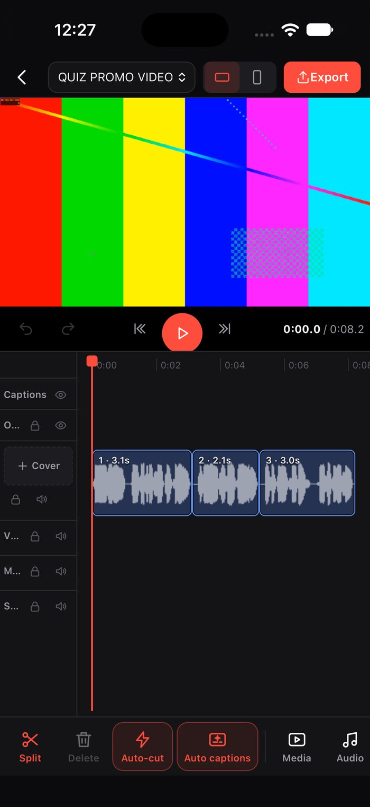

要 Mac 才能做（手機會幫你交給 Mac）：
- AI Onset 的大部分動作、AI Edit
- 很長的影片、Podcast 多機位
- 去背、遮罩、美顏、聲音工具、HDR 轉換
- 其他輸出格式
- 本機生成
手機做不了的事，按「交給 Mac 做」，要求會留在那支影片上，Mac 連上後就看得到。
完全沒網路時，剪輯和輸出照常可以做。
7-2 和 Mac 配對
第一次配對要在同一個 Wi‑Fi，而且 Mac 的 Onset 要開著。
在 Mac：
- 右上角頭像 →「設定」→「同步」。
- 「這台 Mac 同步」按「開啟」。
- 「讓手機連線」按「開啟」。
- 「配對手機」按「顯示 QR code」。
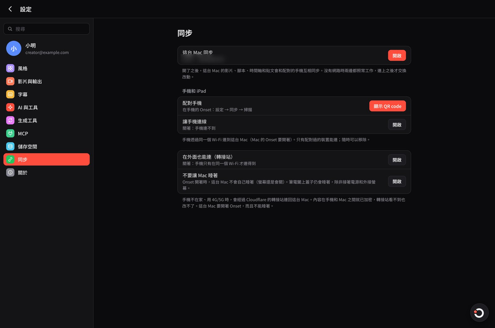
在 iPhone：
- 第一個畫面按「和 Mac 配對」（或「設定 → 同步」）。
- 「掃描 Mac 上的 QR code」。
配好了。之後不用再掃。要移除某支手機，在 Mac 的「設定 → 同步」移除。
7-3 同步怎麼運作
- 離線也能用： 每台裝置都有完整的資料。沒網路時照常工作，連上之後才交換改動。
- 兩邊都改了同一份？ 腳本或時間軸兩邊都改過時，兩個版本都會留著（另一個時間軸會出現在「版本」裡）。
- 影片檔： 手機先拿 720p 的預覽檔，剪起來比較順。要輸出 1080p 時，按「下載原檔」。手機自己拍的影片，會用原檔傳回 Mac。
- 生成庫： Mac 本機生成的圖片和影片會同步到手機的「生成」，先傳小預覽，打開時才下載完整檔案。手機做的也會傳回 Mac。

7-4 在外面也能連（轉接站）
人不在家、手機用 4G / 5G 時，也能連回家裡的 Mac：
- 配對第一支手機後會自動打開「在外面也能連（轉接站）」。在 Mac 的「設定 → 同步」看得到。
- 手機會經過 Onset 的轉接站連回 Mac。內容在手機和 Mac 之間就已經加密，轉接站看不到也改不了。
- 手機上的狀態會寫「在家（直連）」或「在外面（經過轉接站）」。
- 在外面只同步專案、腳本、封面、貼文。 大的影片檔要回家、連上同一個 Wi‑Fi 才傳。
- 家裡的 Mac 要開著 Onset，而且不能睡著。建議打開「不要讓 Mac 睡著」。筆電闔上蓋子還是會睡（除非接著電源和外接螢幕）。
7-5 iPhone 當 Mac 的攝影機
拍 Podcast 或訪談時，iPhone 可以當 Mac 的第二台、第三台相機：
- iPhone 的 Onset 打開錄影 → 設定 →「當 Mac 的攝影機」。
- Mac 的 Recording 頁，「畫面來源」的「iPhone 攝影機」勾選這支 iPhone。
- 在 Mac 按錄影，兩邊一起開始、一起停止。
- 錄好的檔案自動傳回 Mac，每顆鏡頭一個檔案，自動對齊聲音，組成多機位影片。
這個功能要同一個 Wi‑Fi，不經過轉接站。
常見問題
輸出的影片存在哪裡？
照這個順序：
- 你在輸出視窗按「更改…」選過的資料夾。
- 沒選過：「設定 → 儲存空間」裡的媒體資料夾下面的「輸出」。
- 都沒設：影片（Movies）→ Onset。
最快的找法：輸出完按「在 Finder 顯示」。或到「設定 → 影片與輸出」→「打開資料夾」。
想每次自己決定：在輸出視窗勾「每次輸出都問我存在哪裡、叫什麼名字」。 選的資料夾不在了（例如外接硬碟拔掉），會自動存回預設位置。
AI Onset 沒有回應？
- 先關掉 Onset 再打開一次。 大部分的問題這樣就好了。
- 到「設定 → AI 與工具」看：
- AI-helper 要寫「執行中」。如果 AI 說「AI-helper 沒有在執行」，重新打開 Onset。
- 最上面選的 AI（Claude Code、ChatGPT · Codex、Cursor 或 Hermes）要寫「可以用了」。還沒登入就按「登入」，照終端機的指示在瀏覽器登入（見第 1 章）。
- 用 Hermes 的本機模型時，模型要先在 splash 載入；本機模型很慢，一段腳本可能要好幾分鐘。
- 按「重新檢查」。AI-helper 回來後會自動接上，不用重新整理。
- 正在做大工作時（例如「不拍，直接做」），AI 可能在背景忙。看看對話框或狀態列是不是寫著「正在做…」。
本機生成很慢？
本機生成本來就慢：一張圖幾分鐘，5 秒有聲音的影片約半小時。而且一台 Mac 一次只做一段，其他排隊。
可以這樣做：
- 先做「草稿」看看（本機生成頁有草稿選項，快很多）。
- 在「不拍，直接做」把一些鏡頭換成網路圖、素材影片、動畫圖卡。
- 設「本機最多」的時間上限，時間到就自動改成動畫圖卡。
- 裝「H3 Turbo 加速」「H3 快速解碼」（在「設定 → 生成工具」）。
- 趕時間就用雲端生成（第 6 章，要花錢）。
旁白卡住、念錯、沒有出來？
- 某一句念得不好： 在那一句旁白上按「重念 #n 這句」。
- 說「沒有加旁白」： 通常是還沒下載聲音模型，或 AI-helper 沒回應。照它的說明處理（「設定 → AI 與工具 → AI 旁白的聲音模型」），再做一次。
- 預覽時旁白跟畫面對不上、一直重播： 這是舊版的問題，最新版已經修好。請更新 Onset。輸出的檔案不受影響。
硬碟快滿了？
Onset 的影片檔很大，本機生成的模型更大（幾十到上百 GB）。
- 輸出前空間不夠會先擋下來，告訴你「這次大約要 X GB，只剩 Y GB」。
- 「設定 → 儲存空間」：
- 媒體資料夾：把影片素材搬到外接硬碟。 - 壓縮檔案：做成小檔（WhatsApp、E-mail、一半大小），原檔不動。 - 看每支影片、每則貼文佔多少空間，刪掉不要的。
- 不用本機生成的話，不要裝影片模型（MiniMax H3 安裝時要 170～185 GB）。
- 硬碟太滿時（超過 95% 左右），預覽和匯入可能會出錯。請先清出空間。
每次打開都要選頭像、打密碼？
「設定 → 帳號 → 登入」打開「打開 app 自動登入這個帳號」（見第 1 章 1-8）。
打開時說「無法驗證開發者」？
見第 1 章：按右鍵 →「打開」，或到「系統設定 → 隱私權與安全性」按「仍要打開」。
AI 改壞了怎麼辦？
按 AI Onset 對話框裡的「↶ 復原這次 AI 的改動」。剪輯也可以切回之前的「版本」。
雲端生成會不會偷偷花錢？
不會。每一次都會先問你：Higgsfield 報 credits，Theater 報金額，Cursor 和 ChatGPT 說會用你方案的用量；你按同意才做。「自動」選工具時不會選付費工具。
手機看不到 Mac 的東西？
- Mac 的 Onset 要開著，「設定 → 同步」要開啟。
- 不在家時，「在外面也能連」要開著，Mac 不能睡著。
- 在外面時大的影片檔不會傳，回家連同一個 Wi‑Fi 才傳。
Onset 新手使用手冊 · 2026 年 11 月版。畫面截圖在測試環境拍攝，文字可能和你的 Mac 上略有不同。